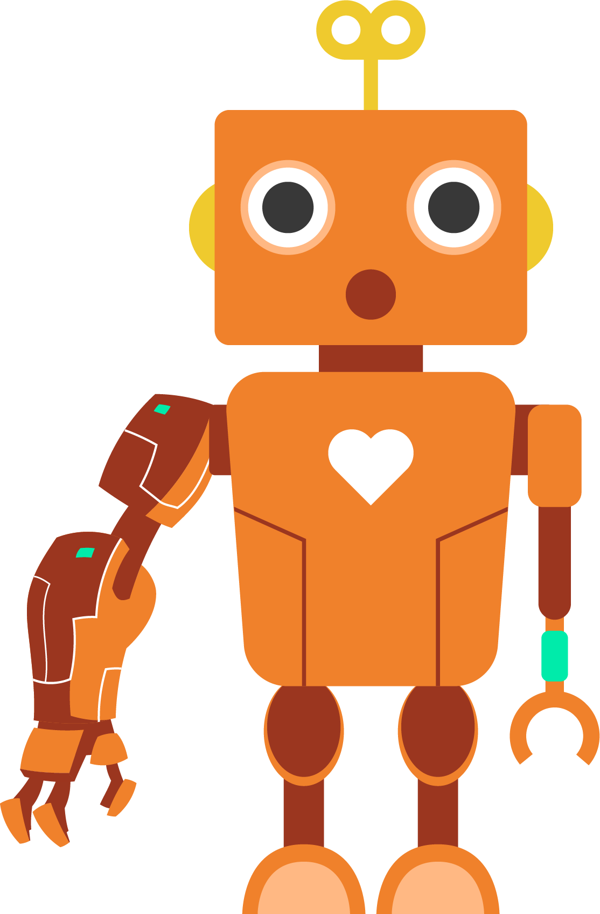
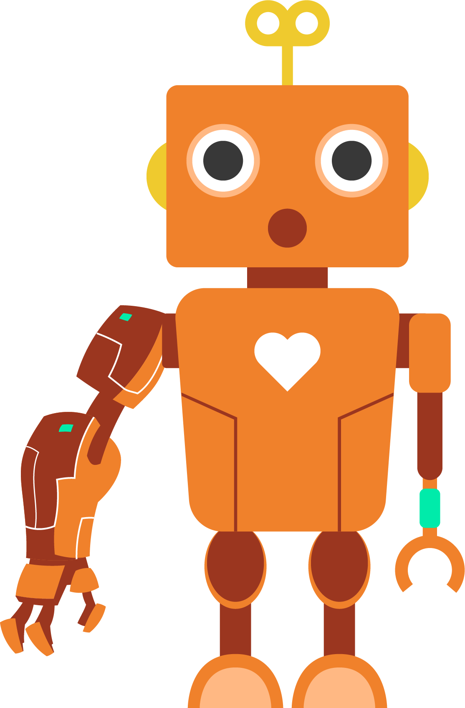

Artificial weapons are vital to helping humanity—an artificial arm based on Google Glass multi-function sensor to control the robot's arm. XiaoQian et al. (2017) used Google Glass to guide NAO robots to transport large objects in an obstacle environment. This controlled robotic arm allows the operator to make immediate decisions. Not only that, but Yongping et al. (2017) also mentioned another robotic arm. Potential applications of the SEA include exoskeleton robots, assistive robots, and flexible manipulators. The adaptive command filter backstepping control (CFBC) design reduces the integrator's Complexity issues reverse control.

 
